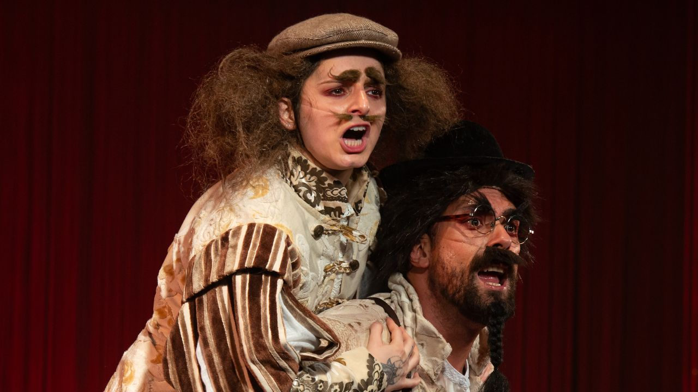

Foto — Caique Cunha
Teatro
Ave Lola segue em cartaz com “Sonho de uma Noite de Verão” no Sesc Santo Amaro
Companhia curitibana apresenta em São Paulo sua nova criação inspirada em Shakespeare, com música ao vivo, teatralidade popular e sessões acessíveisA companhia …